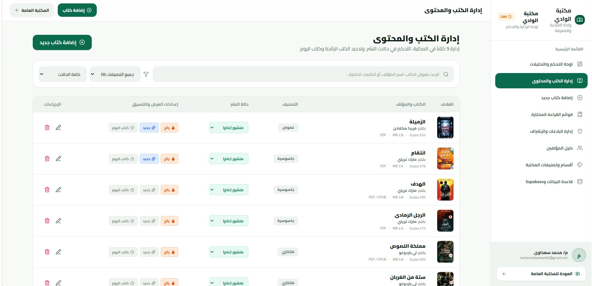

Mobile Application · Personal Project Showcase
مكتبة الوادي
الهدف والحل: تطبيق موبايل تم تطويره ليكون منصة رقمية متكاملة، يهدف لحل مشكلة إدارة المحتوى وتقديمه للمستخدمين بفعالية. تم دمج التقنيات الحديثة مع الذكاء الاصطناعي لتسريع عملية التطوير وحل تحديات البناء (Build Errors).
I worked on the Al-Wadi Library project as a developer, using AI-assisted development to build and configure an Android application. My responsibilities included preparing the development environment, managing project files, troubleshooting build errors, configuring Capacitor, and integrating the application with Supabase. I used Visual Studio Code for code editing, Node.js and npm for dependency management and builds, Capacitor to package the web application for Android, Android Studio and Gradle to build APK files, and GitHub for version control. I also configured Java, tested Debug and Release builds, and prepared a signed Release APK for installation and testing on Android devices.